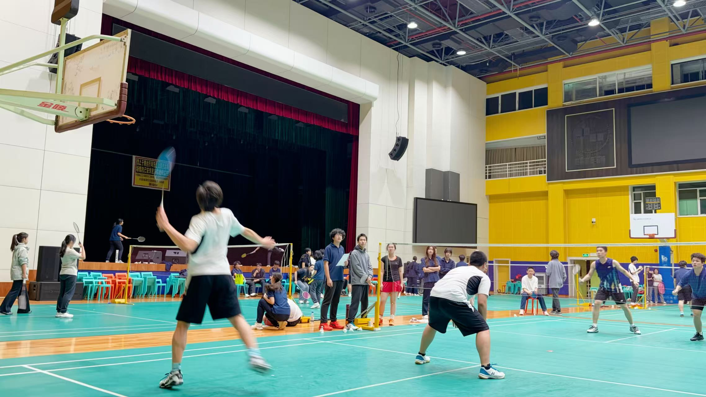
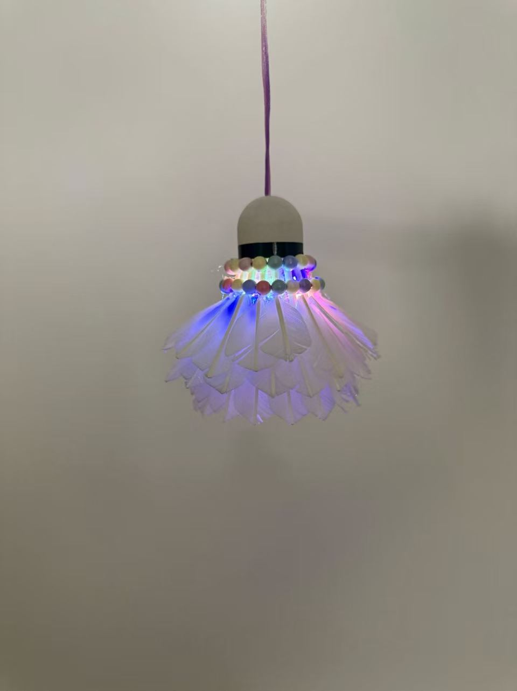
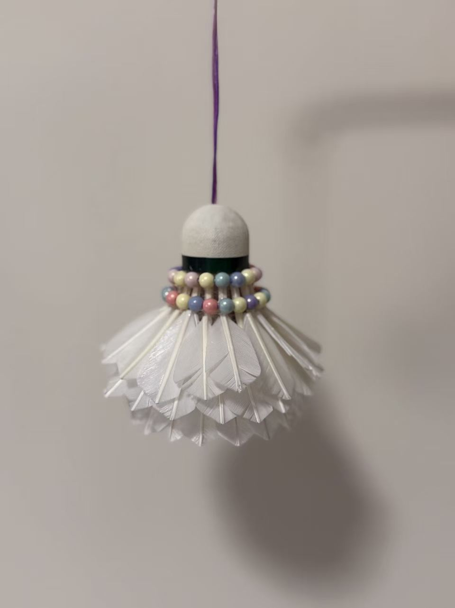
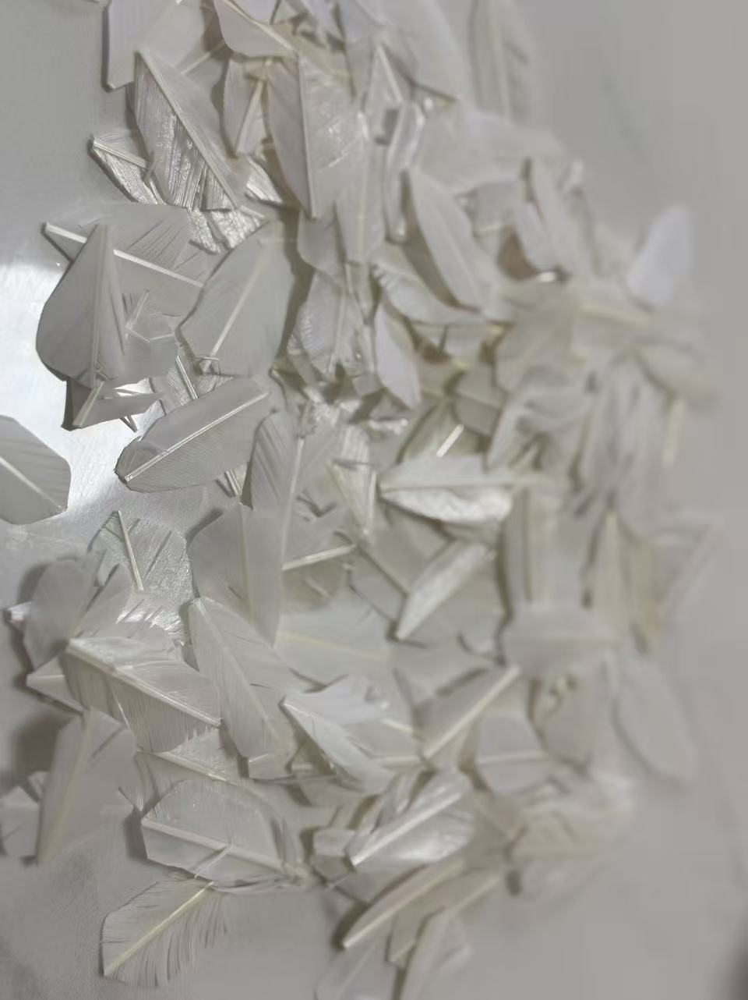

01. The Origin
It all starts on the badminton court with every smash and rally.

Action on the Court
High-energy badminton rallies mean lots of worn-out shuttlecocks that would otherwise be thrown away.

Every Match Counts
Playing badminton regularly provides a continuous supply of discarded shuttlecocks waiting for a new purpose.

Collecting Used Materials
Gathering discarded shuttlecocks after games, sorting them for feather trimming and base repurposing.
02. The Crafting Process
Step-by-step transformation using simple tools and pure creativity.

Sorting Feather Pieces
Plucking damaged feathers and keeping intact tips for delicate crafts like light skirts and dresses.

Weaving & Binding
Using pliers and colorful nylon cords to tightly wrap the shuttlecock frame into smooth, vibrant skirts.

Rainbow Thread Wrapping
Wrapping bases with neon gradient threads to prepare for character painting or standalone ornaments.

Hand-Painting Facial Details
Using fine paint pens to detail superhero masks, cute eyes, and iconic expressions onto cork heads.

Beaded Collar Assembly
Threading pastel beads around the upper neck to create elegant feather skirts for hanging pendants.

Illuminating the Craft
Installing internal LED modules into feather structures to turn shuttlecocks into glowing night-light ornaments.

The Master Collection
After hours of trimming, weaving, and painting, dozens of custom recycled characters come to life! From Marvel superheroes and Minions to Winnie the Pooh, Doraemon, pandas, and custom tassels—all displayed together on a cork board.
03. Artwork Showcase
Explore all the themed series created from upcycled shuttlecocks.


04. Mid-Autumn Festival Special
Glowing lanterns and festive charms for the season of the full moon and family reunion.

The Moonlight Feather Lantern
Just like the lanterns lit on Mid-Autumn night, this shuttlecock lantern glows with a soft rainbow shimmer. Layers of moon-white feathers form a delicate skirt around a hidden LED core, with pastel beads sparkling at the collar — a handmade tribute to the brightest full moon of the year.

Hanging Feather Lantern
By day, an elegant hanging ornament of layered feathers and pastel beads; by night, it lights up like a festive Mid-Autumn lantern.

Minion Reunion Charms
A trio of hand-painted Minions with hanging loops — playful little gifts to share with family and friends during the festival of reunion.

Moon-White Feather Petals
Every lantern begins here: rescued feathers trimmed into soft, moon-white petals, ready to be layered into glowing festival skirts.
Interested in Upcycling or Collaborating?
If you love eco-friendly crafts, want to exchange DIY techniques, or share ideas on sports waste recycling, feel free to drop me a message!
Send Me an Email